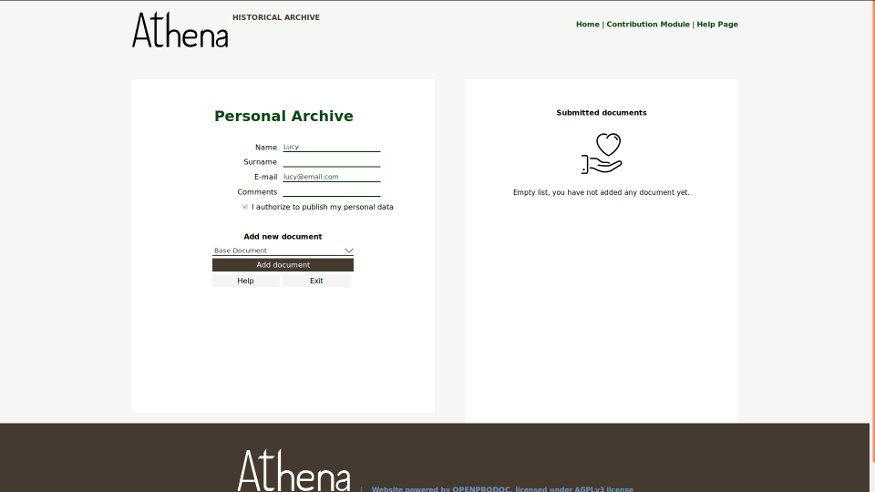

OpenProdoc
 OpenProdoc: Document Management System Castellano
OpenProdoc: Document Management System Castellano 
OpenProdoc 3.0.2
OpenProdoc is a Document Management System, that is, a program for managing documents as well as a description of each document and share them between users. All this grouped in folder/cases that contain the documents and with a security layer so each user acces to the allowed documents. Documents can be searched by its metadata or by its content as in any Internet search web.
It's free to use and it's Open Source, so you can review the source code and even improve it or adapt to your requirements.
OpenProdoc has a portable version that can be used in any computer (Linux, Windows, Mac) WITHOUT INSTALLATION installation and WITH ALL THE FUNCTIONALITY. The portable version can be used by one user or several users at the same time because includes a complete server.
Beside the document functionality, OpenProdoc includes the managing of multilanguage thesauri and controlled dictionaries that can be used isolated or combined with the document definitions.
New functionality in version 3.0.2 (July 2020)
The version 3.0.2 adds, to the existing functionality:
- Import of Javadoc Structures.
- Configuration of toolbar.
- Minor improvements and bug fixes.
New functionality in version 3.0.1 (November 2019)
The version 3.0.1 adds, to the existing functionality, important improvements:
- New API REST for better integration.
- Posibility of developing extensions personalized for:
- Event Tasks
- Scheduled Tasks
- Repository Drivers for storing the documents
- Users Authenticators
- Improved security:
- Portable version includes https (you must include your certificates and review keystore)
- APIs REST and Remote can be disabled
- jwt tokens supported
- New toolbar in web application.
- Support for SQL.
- Improvements in Sessions support.
- Some bugs fixed.
New functionality in version 2.3 (April 2019)
The version 2.3 adds, to the existing functionality, important improvements:
- Functions to define contribution systems so that people outside the organization or department can provide and exchange documents and have their own files without having to register.
- Possibility of generating reports on current folders and documents.
- The full-text indexing language of the documents can be defined, as well as the dictionary of stopwords, so that searches are optimized.
- Possibility of creating "packages" or projects containing definitions of all types of elements, thesauri and folder and document structures.
- Greater control of sessions and resources as well as usage monitoring and connected users.
- Minor improvements and bug fixes.

Parametrization of OpenProdoc Contrib Module by Lucycons3, Nosturi

System Status
New functionality in version 2.2 (September 2018)
Until now the minimum version of Java required by OpenProdoc was Java 1.6. This involved using old versions of some libraries (like Lucene) so as not to demand too much from the computers. However, Java 1.6 is already 12 years old and stopped being updated 5 years ago. Some libraries used by OpenProdoc no longer worked in Java 10.
That is why it has been chosen to update the code and all the libraries to the latest versions. Version 2.2 has been completely recompiled to be able to work with a MINIMUM version of Java 1.8 and higher versions.
In addition, the code includes several improvements and better error control
New functionality in version 2.1 (January 2018)
The version 2.1 adds, to the existing functionality, important improvements:
- Configurable and open search points (OPAC) to allow publish a controlled set of documents or folders.
- Multivalued thesaurus metadata, so the elements as keywords can use a controlled dictionary or complete thesaurus.
- Posibility of moving folders (including complete branches) and documents.
- Export/Import of folders/cases with its documents in web client.
New functionality in version 2.0 (March 2017)
The version 2.0 adds, to the existing functionality, important improvements:
- A portable and multiuser Web version.
- Administration and management functions are now web based so there is no need to install any tool.
- Web interface completely redesigned and optimized
- New function for synchronization of folders in OpenProdoc and local disk.